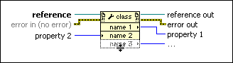

Property Node (XML)
Owning Palette: XML Parser VIs and Nodes
Requires: Base Development System
Gets (reads) and/or sets (writes) properties of an XML reference. The node operates in the same way as a standard Property Node.
National Instruments recommends that you use the Close VI to close all the references after using the XML parser classes.

 Add to the block diagram Add to the block diagram |
 Find on the palette Find on the palette |